はじめに
Oracle Database Autonomous Recovery Service（以下、リカバリ・サービス）は、Oracle Cloud Infrastructure (OCI) で実行するOracle Database向けのフル・マネージド型データ保護サービスです。
オンプレミス製品のZero Data Loss Recovery Appliance (RA) のデータ保護技術をベースとしながら、クラウドならではの自動化機能も兼ね備えています。リカバリ・サービスはOracle Databaseの変更をリアルタイムで保護し、本番データベースのオーバーヘッドなしでバックアップを検証するほか、任意の時点への高速で予測可能なリカバリを実現します。
このチュートリアルでは、BaseDBにリカバリ・サービスを設定する手順についてご紹介します。
このチュートリアルを完了すると、以下のような構成図となります。
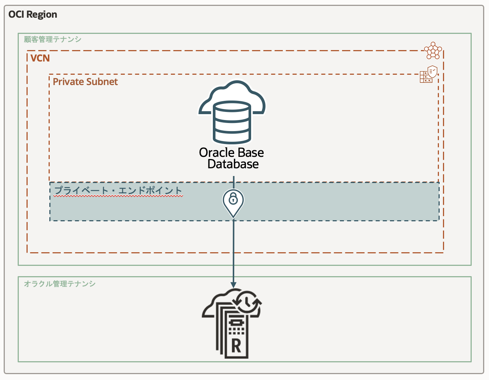
前提条件 :
-
Oracle CloudでOracle Databaseを使おう を通じて Oracle Database の作成が完了していること
-
Autonomous Recovery Service(RCV)を利用する場合、Oracle Database 19.16 以上
-
Zero Data Loss Autonomous Recovery Service (ZRCV) を利用する場合、Oracle Database 19.18 以上
注意 チュートリアル内の画面ショットについては現在の画面と異なっている場合があります。
目次
- 1. サービス制限の引き上げリクエスト
- 2. IAM ポリシーを設定しよう
- 3. サブネットおよびセキュリティ・ルールを設定しよう
- 4. リカバリ・サービス・サブネットを登録しよう
- 5. 保護ポリシーを作成しよう
- 6. BaseDBでリカバリ・サービスを有効化しよう
- 7. 護されたデータベースの詳細を確認しよう
- 8. 保護されたデータベースの一覧を確認しよう
所要時間 : 約40分
1. サービス制限の引き上げリクエスト
サービス制限について
Autonomous Recovery Service (RCV/ZRCV) は全リージョンにデフォルトで以下のサービス制限が付与されています。
これらの容量以上にリソースが必要な場合は1. サービス制限設定を実行してください。デフォルト付与される以上のリソースが必要でない場合、次のセクションは飛ばしてください。
デフォルト付与されるサービス制限
| 説明 | 制限名 | サービス制限 | 内容 |
|---|---|---|---|
| Space Used for Recovery Window (GB) | protected-database-backup-storage-gb | 10,240 | データベースの回復ウィンドウに必要なGB容量 |
| Protected Database Count | protected-database-count | 10 | 保護されたデータベース数 |
サービス制限設定
リカバリ・サービスのサービス制限の引き上げリクエストを申請します。
まず、OCIコンソールのナビゲーション・メニューで、ガバンスと管理をクリックし、[制限、割当ておよび使用状況]をクリックします。
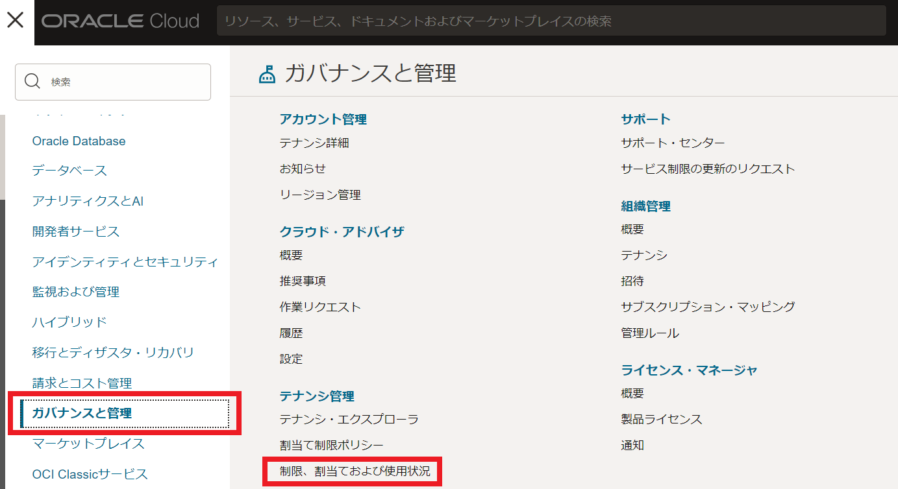
次に、タイトルの下の文章に埋め込まれている「サービス制限の引き上げ」をクリックします。
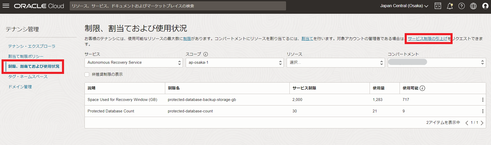
クリックすると、サービス制限の更新リクエストを申請するフォームに遷移します。 以下の項目を選択し、必要な数の制限を申請します。
- Service Category：Autonomous Recovery Service
- Resource：Protected Database Count
- Resource：Space Used for Recovery Window (GB)
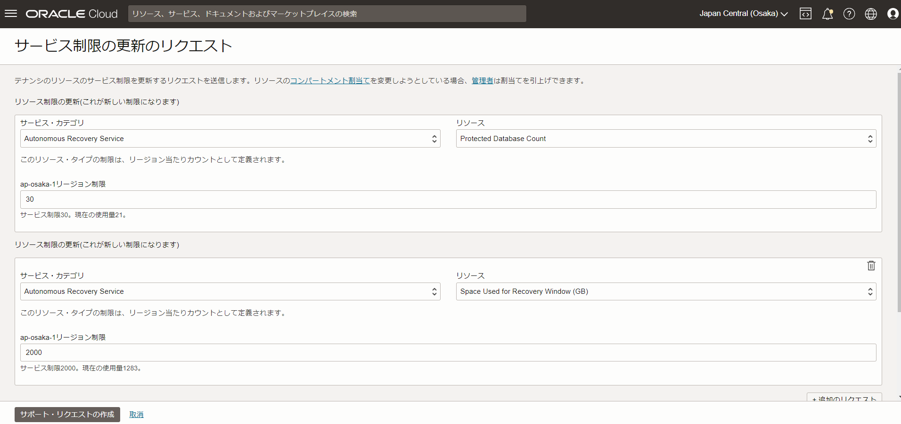
2. IAM ポリシーを設定しよう
次に、リカバリ・サービスおよび関連リソースへのアクセスを有効にするポリシーを設定します。
この設定をすると、サポートされているOCIデータベース・サービスでデータ保護にリカバリ・サービスを使用できるようになります。
リカバリ・サービスの使用に必要なポリシー・ステートメント
以下のポリシーを設定してきます。
| No. | ポリシー・ステートメント | 作成場所 | 説明 |
|---|---|---|---|
| 1 | Allow group <グループ名> to manage all-resources in compartment <コンパートメント> | コンパートメント管理者ポリシー | |
| 2 | Allow service database to manage recovery-service-family in tenancy | Root Compartment | リカバリ・サービス作成に必要なポリシー。OCI Databaseサービスは、コンパートメント内の保護されたデータベース、保護ポリシーおよびリカバリ・サービス・サブネットにアクセスできます。 |
| 3 | Allow service database to manage tag-namespaces in tenancy | Root Compartment | リカバリ・サービス作成に必要なポリシー。OCI Databaseサービスでテナンシのタグ・ネームスペースにアクセスできます。 |
| 4 | Allow service rcs to manage recovery-service-family in tenancy | Root Compartment | リカバリ・サービス作成に必要なポリシー。リカバリ・サービスが、コンパートメント内の保護されたデータベース、リカバリ・サービス・サブネットおよび保護ポリシーにアクセスして管理できるようにします。 |
| 5 | Allow service rcs to manage virtual-network-family in tenancy | Root Compartment | リカバリ・サービス作成に必要なポリシー。リカバリ・サービスがコンパートメント内の各データベースVCN内のプライベート・サブネットにアクセスして管理できるようにします。 |
| 6 | Allow group <グループ名> to manage recovery-service-family in tenancy | Root Compartment | 指定したグループのユーザーがすべてのリカバリ・サービス・リソースにアクセスできるようにします。 |
ポリシー画面
「ナビゲーション・メニュー」の「アイデンティティとセキュリティ」を選択し、「アイデンティティ」の「ポリシー」をクリックします。
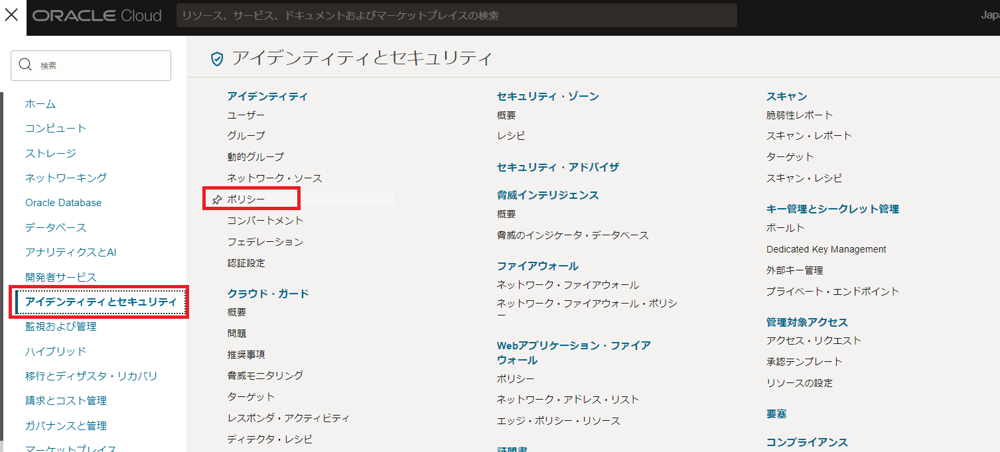
「ポリシーの作成」ボタンをクリックし、ポリシーの作成をします。
- 名前：任意（スペースは使用できません。英字、数字、ハイフン、ピリオドまたはアンダースコアのみです。）
- 説明：任意
- ポリシー・ビルダー：「手動エディタの表示」を有効化し、以下のポリシーを入力します。
Allow group <グループ名> to manage all-resources in compartment <コンパートメント>
Allow service database to manage recovery-service-family in tenancy
Allow service database to manage tag-namespaces in tenancy
Allow service rcs to manage recovery-service-family in tenancy
Allow service rcs to manage virtual-network-family in tenancy
Allow group <グループ名> to manage recovery-service-family in tenancy
リカバリ・サービスの使用に必要なポリシー・ステートメントはRoot Compartmentへ作成する必要があることに注意してください。
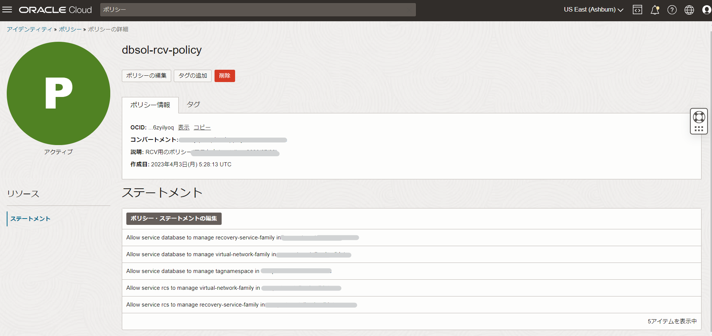
3. サブネットおよびセキュリティ・ルールを設定しよう
リカバリ・サービスはリカバリ・サービス・サブネットという専用のサブネットを使用します。新規、既存、どちらのサブネットでもリカバリ・サービス・サブネットとして利用できます。
まず、データベースとリカバリ・サービス間のバックアップ・トラフィックを許可するために、データベースのVCNに以下のイングレス・ルールを追加します。
リカバリ・サービスで使用されるプライベート・サブネットのサブネット・サイズ要件およびイングレス・ルール
| イングレス・ルール | ソースCIDR | IPプロトコル | ソース・ポート範囲 | 宛先ポート範囲 |
|---|---|---|---|---|
| リカバリ・サービスからのHTTPSトラフィック許可 | データベースが存在するVCNのCIDR | TCP | All | 8005 |
| リカバリ・サービスからのSQLNetトラフィック許可 | データベースが存在するVCNのCIDR | TCP | ALL | 2484 |
セキュリティ・リスト画面 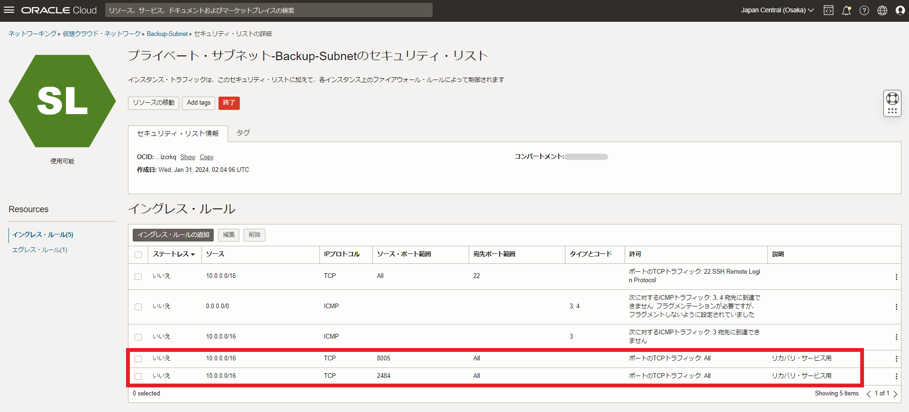
4. リカバリ・サービス・サブネットを登録しよう
次に、先ほどのVCNのサブネットをリカバリ・サービス・サブネットとして、リカバリ・サービス側に登録します。
複数の保護されたデータベースを作成したい場合は、リカバリ・サービス専用のサブネットを新規作成し、それを利用することを検討します。
まず、ナビゲーション・メニューで、[Oracle Database]をクリックし、[データベース・バックアップ]を選択します。
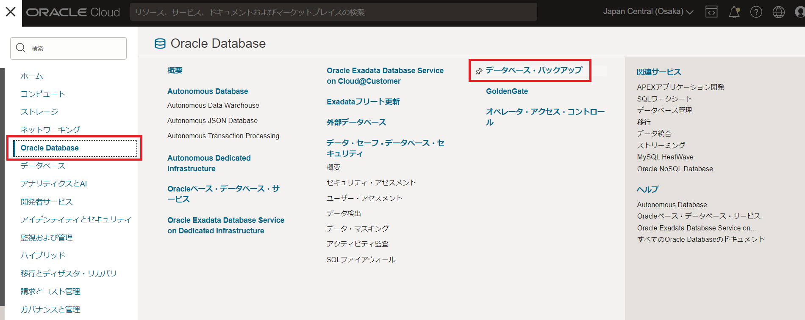
[データベース・バックアップ]ページが表示されたら、左のメニュー・バーにある[リカバリ・サービス・サブネット]をクリックします。 そして、「リカバリ・サービス・サブネットの登録」をクリックします。
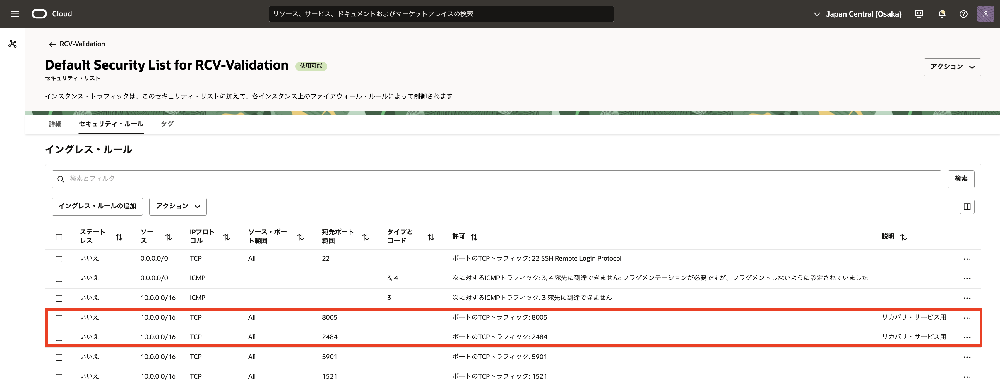
次の内容を入力し、[登録]をクリックします。
- 名前：任意 リカバリ・サービス・サブネットの名前を入力します
- コンパートメント：リカバリ・サービス・サブネットを作成するコンパートメントを選択します
- 仮想クラウド・ネットワーク：使用したいサブネットが存在するデータベースVCNを選択します
- サブネット：データベースVCNのリカバリ・サービス操作に対して構成したプライベート・サブネットを選択します
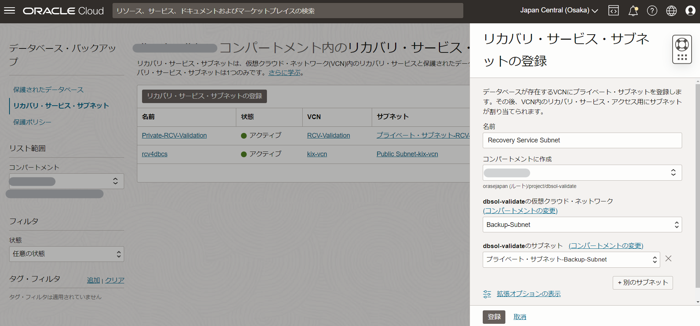
リカバリ・サービス・サブネットの登録が完了すると、このような画面に遷移します。
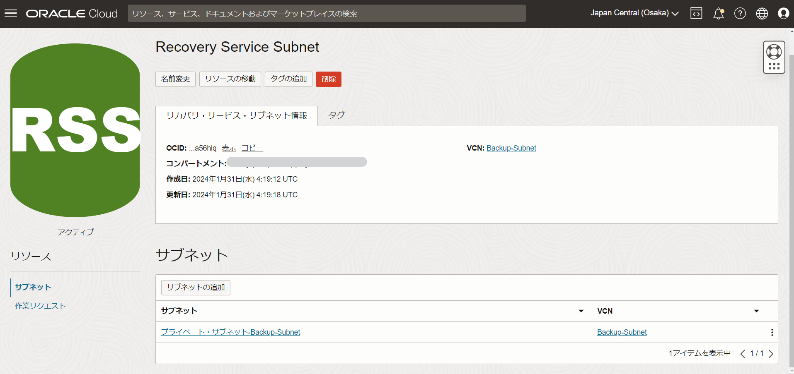
5. 保護ポリシーを作成しよう
次に、保護ポリシーを作成していきます。
保護ポリシーは、リカバリ・サービスによって作成されたバックアップを保持する最大期間(日数)を決定します。ビジネス要件に基づいて、保護されているデータベースごとに個別のポリシーを割り当てるか、VCN内のすべての保護されているデータベースにまたがって単一のポリシーを使用できます。
[データベース・バックアップ]画面の [保護ポリシー]を開き、[保護ポリシーの作成]をクリックします
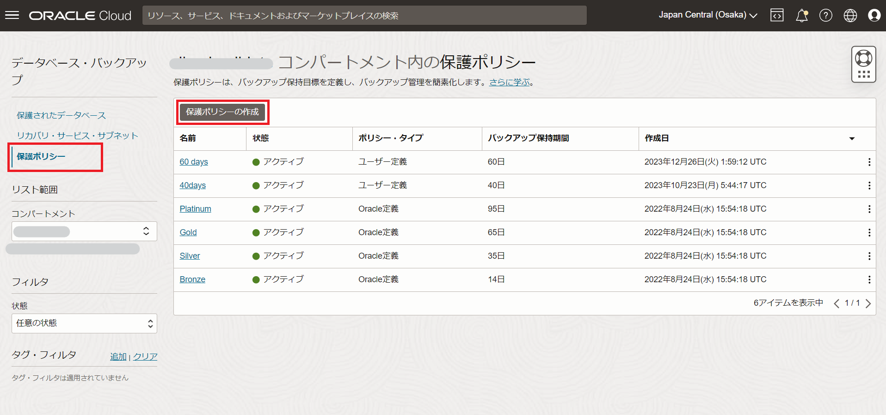
次の項目を入力し、[作成]をクリックします。
- 名前：任意 ポリシーの名前を指定します
- コンパートメントに作成：保護ポリシーを作成するコンパートメントを選択します
- バックアップ保持期間(日)：このポリシーを使用してバックアップを保持する最大日数を指定します。最小14日間～最大95日間を指定できます。
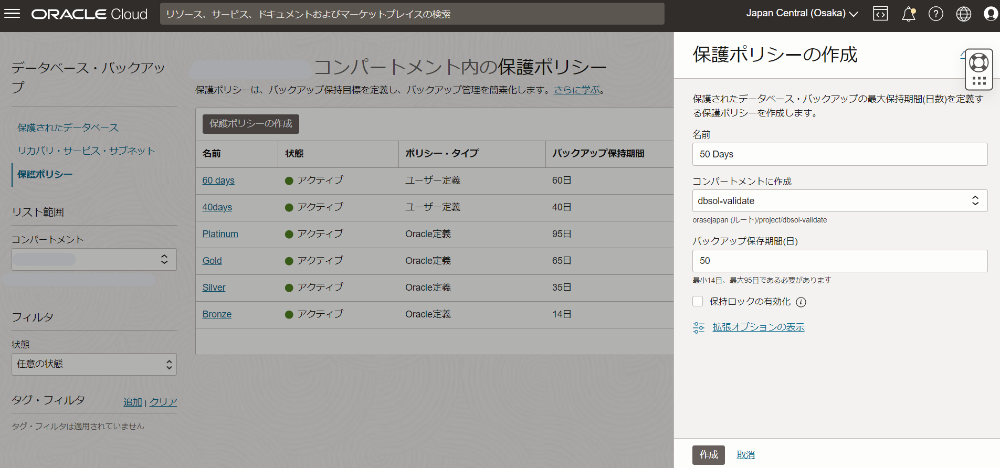
作成が終わると、保護ポリシーが表示されます。
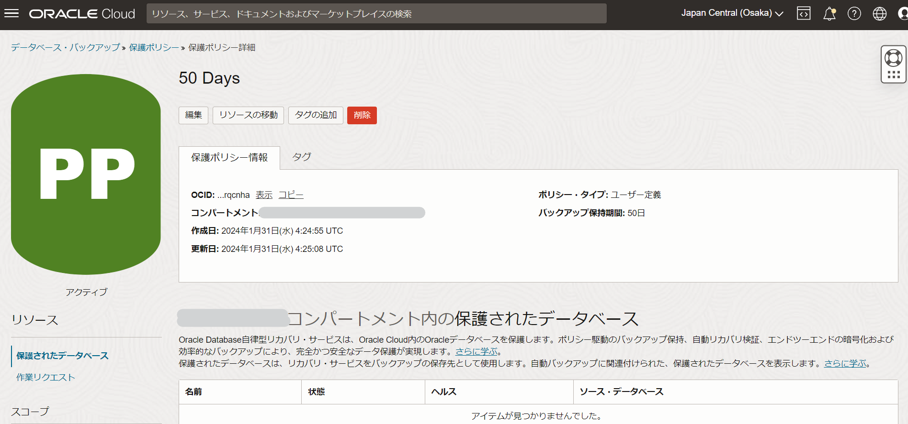
保護ポリシーの一覧を確認することもできます。
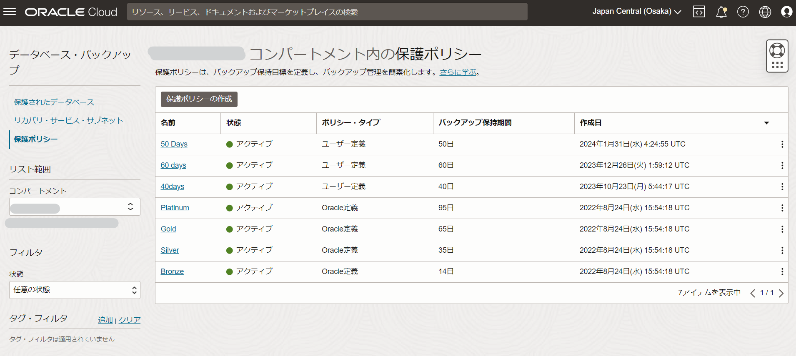
6. BaseDBでリカバリ・サービスを有効化しよう
コンソールを使用して、データベース・サービスに対して自動増分バックアップの有効化、オンデマンドでのフル・バックアップの作成、管理されたバックアップのリストの表示を行うことができます。
データベース・サービスにリカバリ・サービスを設定する方法は以下の2つあります。
A： データベース・サービスを新規作成すると同時に、リカバリ・サービスも有効化
B： 既存のデータベース・サービスにリカバリ・サービスを有効化
今回のチュートリアルではBの手順を行いますが、参考としてAの方法もご紹介します。
A：データベース・サービスを新規作成すると同時に、リカバリ・サービスも有効化
データベース・サービスを新規作成する際に、リカバリ・サービスを設定し、有効化することが可能です。
データベース・サービスの作成画面の自動バックアップの有効化でリカバリ・サービスの設定をすることができます。この設定はプロビジョニング後でも変更可能です。
※前半でご紹介したリカバリ・サービス・サブネットやネットワークの事前準備が完了している必要があります。
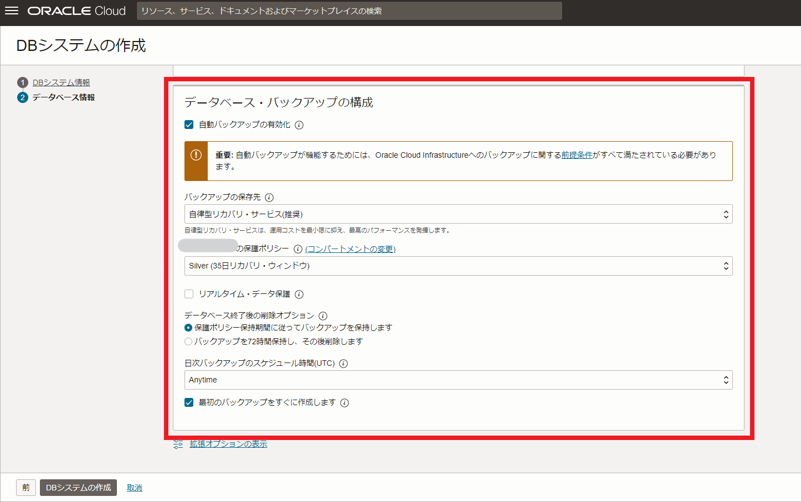
データベース・サービスの新規作成方法はOracle CloudでOracle Databaseを使おうで学習できます。
B：既存のデータベース・サービスにリカバリ・サービスを有効化
既存のデータベース・サービスの自動バックアップの取得先として、リカバリ・サービスを指定します。
ナビゲーション・メニューの「Oracle Database」をクリックし、「Oracleベース・データベース・サービスをクリックします。
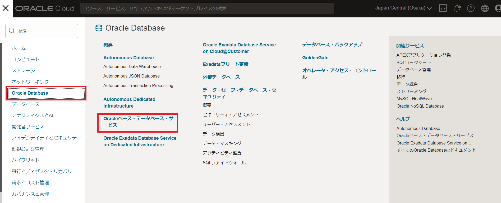
リカバリ・サービスを設定したいDBシステムを選択し、データベース詳細画面に遷移します。
そして、「自動バックアップの構成」をクリックします。
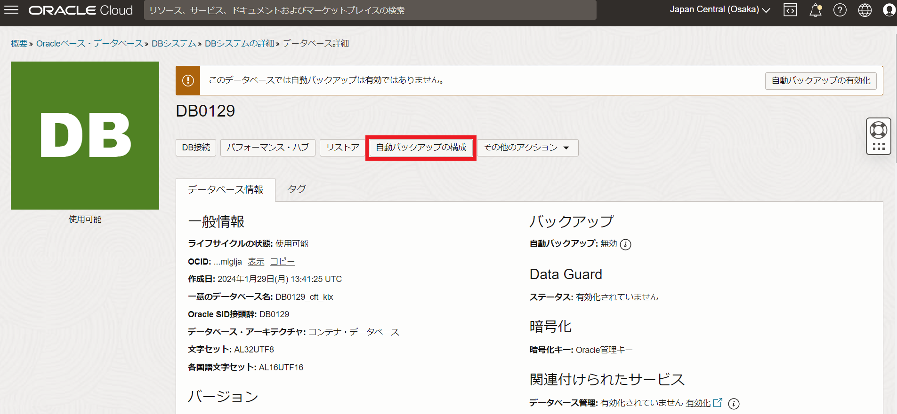
次に、以下項目を入力し、[変更の保存]をクリックします。
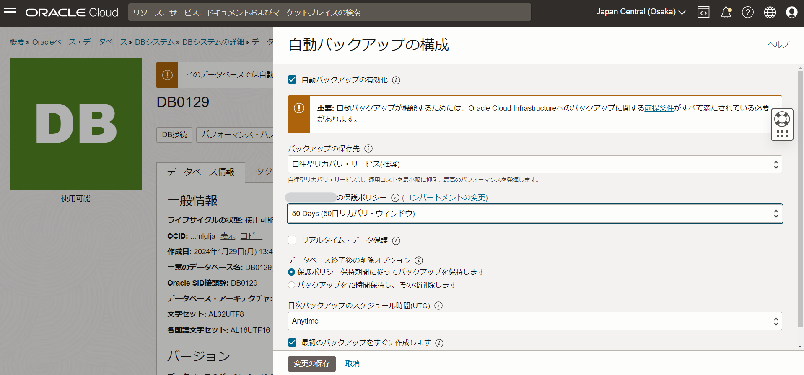
入力項目と入力内容
- 自動バックアップの有効化: 有効化するためにチェック
- バックアップの保存先：「自律型リカバリ・サービス(推奨)」（デフォルト）を選択します
- 保護ポリシー：事前設定された保持期間のポリシー、または、事前定義したカスタム・ポリシーを選択します
- リアルタイム・データ保護：
 REDO転送オプションの有無を選択します。
REDO転送オプションの有無を選択します。
REDO転送オプションについて
リカバリ・サービスには2種類のタイプがあります。Autonomous Recovery Service (RCV) とZero Data Loss Autonomous Recovery Service (ZRCV) です。
この2種類の違いは、REDO転送オプションの有無です。RCVはREDO転送オプション無し、ZRCVがREDO転送オプションありのタイプです。
REDO転送オプションを有効化すると、リアルタイムREDO転送が実施されるため、DBストレージ上のREDOログを損失する障害においても、0に近いリカバリ・ポイント目標(RPO)が提供されます。
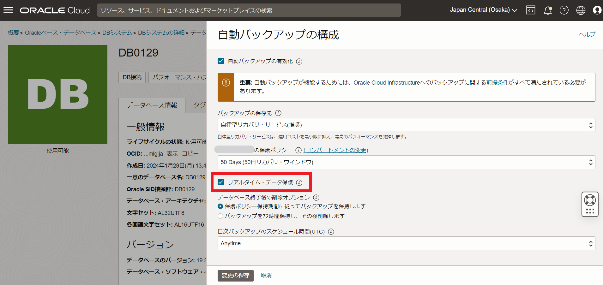
- チェックボックスにチェックあり ＝ Zero Data Loss Autonomous Recovery Service (ZRCV) を利用
- チェックボックスにチェックなし ＝Autonomous Recovery Service (RCV) を利用
- データベース終了後の削除オプション：データベースの終了後に保護されたデータベース・バックアップを保持するために使用できるオプション。データベースに偶発的または悪意のある障害が発生した場合にバックアップからデータベースをリストアする場合にも役立ちます。
- 日次バックアップのスケジュール時間(UTC)：増分バックアップが開始される時間ウィンドウを指定します。
- 最初のバックアップをすぐに作成します：最初の完全バックアップを延期することを選択した場合、データベース障害が発生してもデータベースがリカバリできない可能性があります。
[変更の保存]をクリック後、データベースの詳細画面に入力した内容が表示されます。
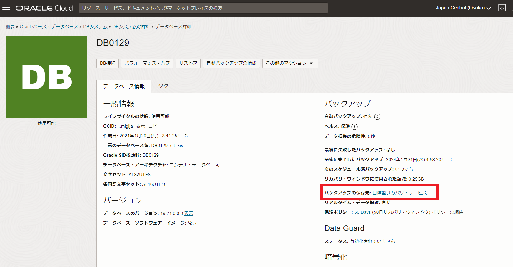
「最初のバックアップをすぐに作成します」のチェックボックスにチェックを入れた場合、すぐにバックアップが開始されます。
また、「リアルタイム・データ保護: 有効」になっていると データ損失の危険性の項目は0秒になります。
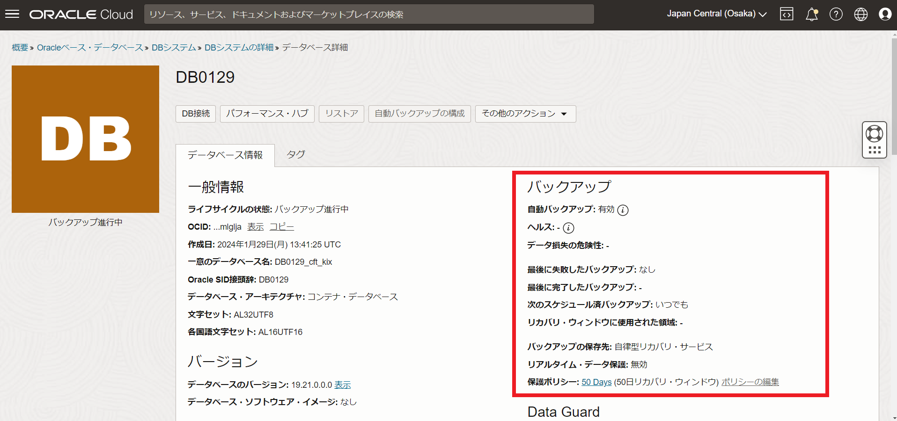
初期バックアップが完了すると、取得されたバックアップが「リソース」の「バックアップ」に表示されます
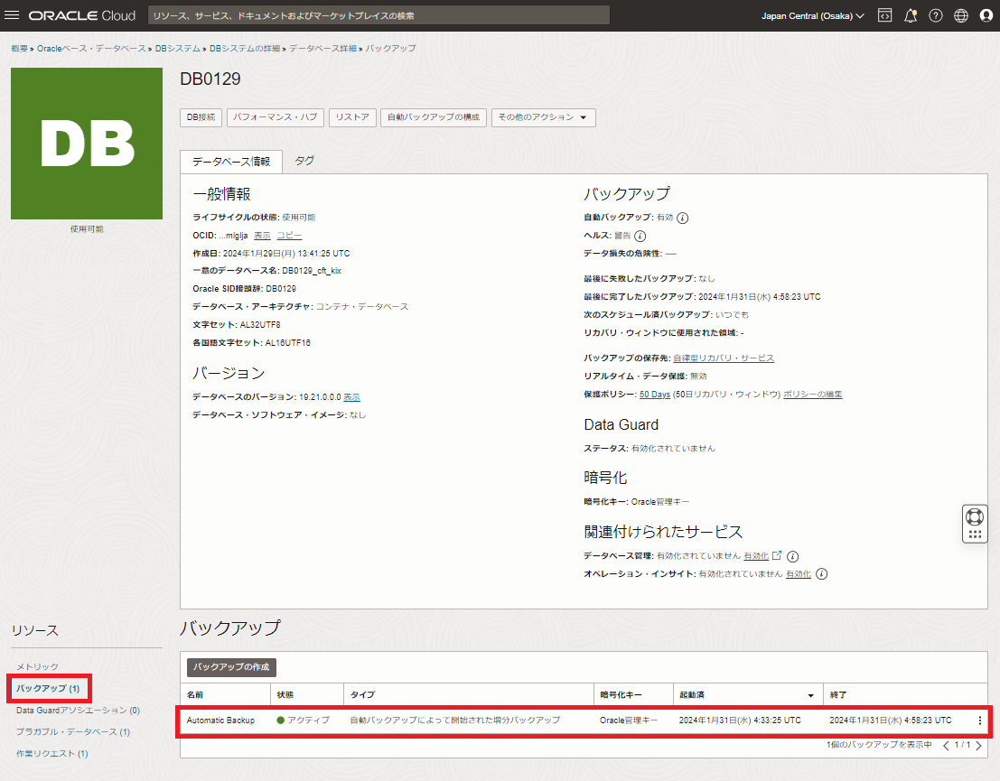
7. 保護されたデータベースの詳細を確認しよう
リカバリ・サービスの有効後、保護されたデータベースの詳細を確認することができます。
データベースの詳細画面の「バックアップ」にある「自律型リカバリ・サービス」をクリックすると、保護されたデータベースの詳細画面に遷移します。
保護されたデータベースの詳細画面
保護されたデータベースの詳細画面には以下の項目が表示されます。
保護サマリー
- ヘルス：保護されたデータベースのステータス
- リアルタイム保護：REDO転送オプションの有無
- データ損失の可能性：最後の有効なバックアップ以降の時間（データ損失の可能性がある期間）
- 保護ポリシー：適用されている保護ポリシー
- 現在のリカバリ・ウィンドウ：現在の時刻から開始して、遡ってデータベースをリカバリできる期間
データベース・バックアップのサマリー
- 最後に失敗したバックアップ：最後にバックアップに失敗した時刻
- 最後に完了したバックアップ：最後に完了したバックアップを取得した時刻
- 最終バックアップ期間：バックアップにかかった時間
保護されたデータベース
- データベース詳細：保護されたデータベースの名前
- 一意のデータベース名：保護されたデータベースの一意のデータベース名
- データベースのバージョン：保護されたデータベースのバージョン
- コンパートメント：保護されたデータベースが存在するコンパートメント
領域使用量
- リカバリ・ウィンドウに使用された領域：現在から遡ってデータベースをリカバリできる期間を満たすために、使用された領域
※「リカバリ・ウィンドウに使用された領域」は現在と保護ポリシーに基づいた予測の2種類表示されます。
リカバリ・サービスの領域使用量に必要な要素な次のようなものがあります。
1) データベースのサイズ: 保護されたデータベースのサイズ
2) 週次仮想フルバックアップ: ZRCVのデータ保持期間の週数分のフルバックアップのサイズ
3) Redoログサイズ: 随時出力される Redoサイズ
4) 日次増分バックアップ: 日次増分バックアップの日数分のサイズ
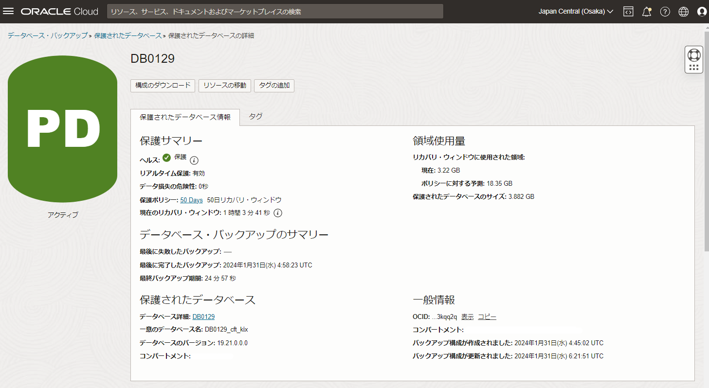
保護されたデータベースの詳細画面を下にスクロールすると、「メトリック」が確認できます。
メトリック
- リカバリ・ウィンドウに使用された領域：保護されたデータベースのリカバリ・ウィンドウの目標を満たすために現在使用されているストレージ領域の量
- 保護されたデータベースのサイズ：保護されたデータベースによって消費されたストレージ領域の合計
- 保護されたデータベース・ヘルス：データベースの現在の保護ステータス
- データ損失の危険性：最後の有効なバックアップ以降の時間(データ損失の可能性がある期間)
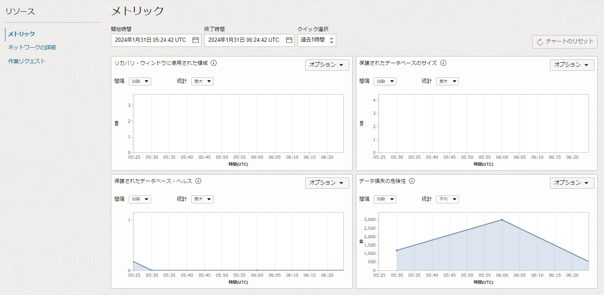
8. 保護されたデータベースの一覧を確認しよう
同一コンパートメント内で保護されているデータベースの一覧を見ることができます。
保護されたデータベースの詳細画面の左上にある「保護されたデータベース」をクリックします。
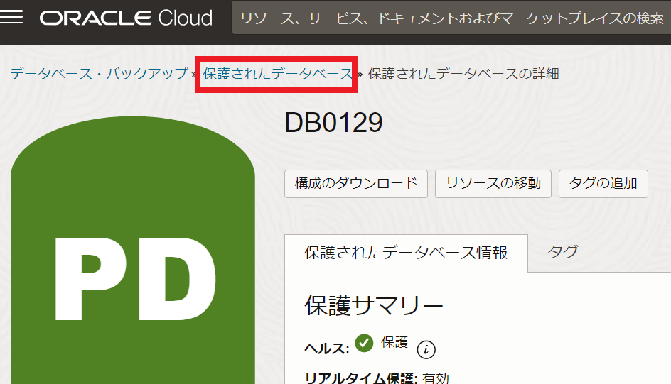
すると、コンパートメント内で保護されているデータベースの一覧表示されます。 複数の保護されたデータベースの保護状態を1つの画面で確認できます。
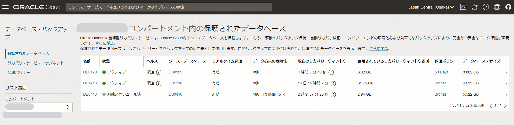
以上で、この章の作業は完了です。